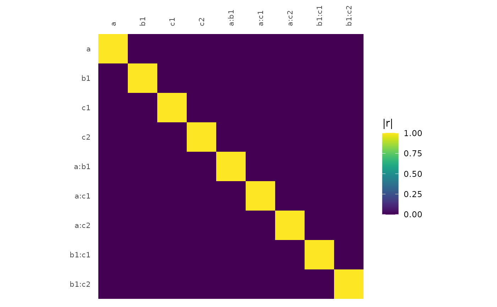
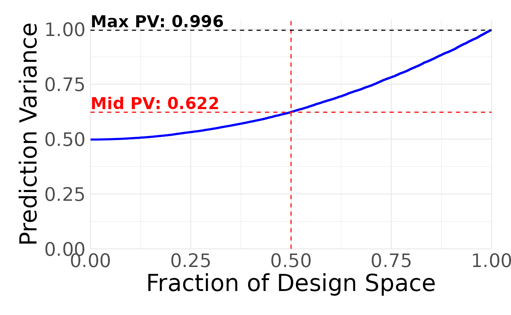

Creates an experimental design given a model, desired number of runs, and a data frame of candidate
test points. gen_design chooses points from the candidate set and returns a design that is optimal for the given
statistical model.
Usage
gen_design(
candidateset,
model,
trials,
splitplotdesign = NULL,
blocksizes = NULL,
optimality = "D",
augmentdesign = NULL,
repeats = 20,
custom_v = NULL,
varianceratio = 1,
contrast = contr.simplex,
aliaspower = 2,
minDopt = 0.8,
k = NA,
parallel = FALSE,
progress = TRUE,
add_blocking_columns = FALSE,
randomized = TRUE,
advancedoptions = NULL,
timer = NULL
)Arguments
- candidateset
A data frame of candidate test points; each run of the optimal design will be chosen (with replacement) from this candidate set. Each row of the data frame is a candidate test point. Each row should be unique. Usually this is a full factorial test matrix generated for the factors in the model unless there are disallowed combinations of runs. Factors present in the candidate set but not present in the model are stripped out, and the duplicate entries in the candidate set are removed. Disallowed combinations can be specified by simply removing them from the candidate set. Disallowed combinations between a hard-to-change and an easy-to-change factor are detected by comparing an internal candidate set generated by the unique levels present in the candidate set and the split plot design. Those points are then excluded from the search. If a factor is continuous, its column should be type
numeric. If a factor is categorical, its column should be typefactororcharacter.- model
The statistical model used to generate the test design.
- trials
The number of runs in the design.
- splitplotdesign
If `NULL`, a fully randomized design is generated. If not NULL, a split-plot design is generated, and this argument specifies the design for all of the factors harder to change than the current set of factors. Each row corresponds to a block in which the harder to change factors will be held constant. Each row of
splitplotdesignwill be replicated as specified inblocksizes, and the optimal design is found for all of the factors given in themodelargument, taking into consideration the fixed and replicated hard-to-change factors. Ifblocksizesis missing, `gen_design` will attempt to allocate the runs in the most balanced design possible, given the number of blocks given in the argument `splitplotdesign` and the total number of `trials`.- blocksizes
Default `NULL`. Specifies the block size(s) for design generation. If only one number is passed, `gen_design()` will create blocks of the specified size, and if the total number of run specified in `trials` is not divisible by the number, `gen_design()` will attempt to allocate the runs in the most balanced design possible. If a list is passed, each entry in the list will specify an additional layer of blocking. If `splitplotdesign` is not `NULL`, this argument specifies the number of subplots within each whole plot (each whole plot corresponding to a row in the `splitplotdesign` data.frame).
- optimality
Default `D`. The optimality criterion used in generating the design. Full list of supported criteria: "D", "I", "A", "ALIAS", "G", "T", "E", or "CUSTOM". If "CUSTOM", user must also define a function of the model matrix named `customOpt` in their namespace that returns a single value, which the algorithm will attempt to optimize. For `CUSTOM` optimality split-plot designs, the user must instead define `customBlockedOpt`, which should be a function of the model matrix and the variance-covariance matrix. For information on the algorithm behind Alias-optimal designs, see Jones and Nachtsheim. "Efficient Designs With Minimal Aliasing." Technometrics, vol. 53, no. 1, 2011, pp. 62-71.
- augmentdesign
Default NULL. A `data.frame` of runs that are fixed during the optimal search process. The columns of `augmentdesign` must match those of the candidate set. The search algorithm will search for the optimal `trials` - `nrow(augmentdesign)` remaining runs.
- repeats
Default `20`. The number of times to repeat the search for the best optimal design.
- custom_v
Default `NULL`. The user can pass a custom variance-covariance matrix to be used during blocked design generation.
- varianceratio
Default `1`. The ratio between the block and run-to-run variance for a given stratum in a split plot/blocked design. This requires a design passed into `splitplotdesign`, so it will be overridden to `1` if no split plot design is entered.
- contrast
Default `contr.simplex`, an orthonormal sum contrast. Function used to generate the encoding for categorical variables.
- aliaspower
Default `2`. Degree of interactions to be used in calculating the alias matrix for alias optimal designs.
- minDopt
Default `0.8`. Minimum value for the D-Optimality of a design when searching for Alias-optimal designs.
- k
Default `NA`. For D-optimal designs, this changes the search to a k-exchange algorithm Johnson and Nachtsheim. "Some Guidelines for Constructing Exact D-Optimal Designs on Convex Design Spaces." Technometrics, vol. 25, 1983, pp. 271-277. This exchanges only the k lowest variance runs in the design at each search iteration. Lower numbers can result in a faster search, but are less likely tofind an optimal design. Values of `k >= n/4` have been shown empirically to generate similar designs to the full search. When `k == trials`, this results in the default modified Federov's algorithm. A `k` of 1 is a form of Wynn's algorithm Wynn. "Results in the Theory and Construction of D-Optimum Experimental Designs," Journal of the Royal Statistical Society, Ser. B,vol. 34, 1972, pp. 133-14.
- parallel
Default `FALSE`. If `TRUE`, the optimal design search will use all but one of the available cores. This can lead to a substantial speed-up in the search for complex designs. If the user wants to set the number of cores manually, they can do this by setting `options("cores")` to the desired number (e.g. `options("cores" = parallel::detectCores())`). NOTE: If you have installed BLAS libraries that include multicore support (e.g. Intel MKL that comes with Microsoft R Open), turning on parallel could result in reduced performance.
- progress
Default `TRUE`. Whether to include a progress bar.
- add_blocking_columns
Default `FALSE`. The blocking structure of the design will be indicated in the row names of the returned design. If `TRUE`, the design also will have extra columns to indicate the blocking structure. If no blocking is detected, no columns will be added.
- randomized
Default `TRUE`, due to the intrinsic randomization of the design search algorithm. If `FALSE`, the randomized design will be re-ordered from left to right.
- advancedoptions
Default `NULL`. An named list for advanced users who want to adjust the optimal design algorithm parameters. Advanced option names are `design_search_tolerance` (the smallest fractional increase below which the design search terminates), `alias_tie_power` (the degree of the aliasing matrix when calculating optimality tie-breakers), `alias_tie_tolerance` (the smallest absolute difference in the optimality criterion where designs are considered equal before considering the aliasing structure), `alias_compare`` (which if set to FALSE turns off alias tie breaking completely), `aliasmodel` (provided if the user does not want to calculate Alias-optimality using all `aliaspower` interaction terms), and `progressBarUpdater`` (a function called in non-parallel optimal searches that can be used to update an external progress bar). Finally, there's `g_efficiency_method`, which sets the method used to calculate G-efficiency (default is "random" for a random Monte Carlo sampling of the design space, "optim" for to use simulated annealing, or "custom" to explicitly define the points in the design space, which is the fastest method and the only way to calculate prediction variance with disallowed combinations). With this, there's also `g_efficiency_samples`, which specifies the number of random samples (default 1000 if `g_efficiency_method = "random"`), attempts at simulated annealing (default 1 if `g_efficiency_method = "optim"`), or a data.frame defining the exact points of the design space if `g_efficiency_method = "custom"`.
- timer
Deprecated: Use `progress` instead.
Value
A data frame containing the run matrix for the optimal design. The returned data frame contains supplementary information in its attributes, which can be accessed with the `get_attributes()` and `get_optimality()` functions.
Details
Split-plot designs can be generated with repeated applications of gen_design; see examples for details.
Examples
#Generate the basic factorial candidate set with expand.grid.
#Generating a basic 2 factor candidate set:
basic_candidates = expand.grid(x1 = c(-1, 1), x2 = c(-1, 1))
#This candidate set is used as an input in the optimal design generation for a
#D-optimal design with 11 runs.
design = gen_design(candidateset = basic_candidates, model = ~x1 + x2, trials = 11)
#We can also use the dot formula to automatically use all of the terms in the model:
design = gen_design(candidateset = basic_candidates, model = ~., trials = 11)
#Here we add categorical factors, specified by using "as.factor" in expand.grid:
categorical_candidates = expand.grid(a = c(-1, 1),
b = as.factor(c("A", "B")),
c = as.factor(c("High", "Med", "Low")))
#This candidate set is used as an input in the optimal design generation.
design2 = gen_design(candidateset = categorical_candidates, model = ~a + b + c, trials = 19)
#We can also increase the number of times the algorithm repeats
#the search to increase the probability that the globally optimal design was found.
design2 = gen_design(candidateset = categorical_candidates,
model = ~a + b + c, trials = 19, repeats = 100)
#We can perform a k-exchange algorithm instead of a full search to help speed up
#the search process, although this can lead to less optimal designs. Here, we only
#exchange the 10 lowest variance runs in each search iteration.
if(skpr:::run_documentation()) {
design_k = gen_design(candidateset = categorical_candidates,
model = ~a + b + c, trials = 19, repeats = 100, k = 10)
}
#To speed up the design search, you can turn on multicore support with the parallel option.
#You can also customize the number of cores used by setting the cores option. By default,
#all cores are used.
if(skpr:::run_documentation()) {
options(cores = 2)
design2 = gen_design(categorical_candidates,
model = ~a + b + c, trials = 19, repeats = 1000, parallel = TRUE)
}
#> Loading required package: foreach
#> Loading required package: future
#You can also use a higher order model when generating the design:
design2 = gen_design(categorical_candidates,
model = ~a + b + c + a * b * c, trials = 12, repeats = 10)
#To evaluate a response surface design, include center points
#in the candidate set and include quadratic effects (but not for the categorical factors).
quad_candidates = expand.grid(a = c(1, 0, -1), b = c(-1, 0, 1), c = c("A", "B", "C"))
gen_design(quad_candidates, ~a + b + I(a^2) + I(b^2) + a * b * c, 20)
#> a b c
#> 1 -1 -1 A
#> 2 1 -1 A
#> 3 1 1 A
#> 4 1 -1 B
#> 5 1 -1 C
#> 6 1 1 B
#> 7 -1 -1 C
#> 8 0 0 B
#> 9 1 0 C
#> 10 -1 -1 B
#> 11 -1 1 B
#> 12 0 -1 C
#> 13 -1 1 C
#> 14 -1 1 A
#> 15 1 -1 A
#> 16 -1 1 A
#> 17 0 1 C
#> 18 -1 0 C
#> 19 1 1 C
#> 20 -1 -1 A
#The optimality criterion can also be changed:
gen_design(quad_candidates, ~a + b + I(a^2) + I(b^2) + a * b * c, 20,
optimality = "I", repeats = 10)
#> a b c
#> 1 1 1 B
#> 2 1 1 A
#> 3 -1 -1 A
#> 4 0 0 A
#> 5 -1 -1 B
#> 6 -1 -1 C
#> 7 0 0 B
#> 8 1 1 C
#> 9 1 -1 B
#> 10 0 0 B
#> 11 -1 1 A
#> 12 -1 1 C
#> 13 -1 1 B
#> 14 1 -1 A
#> 15 0 0 A
#> 16 0 1 C
#> 17 -1 0 C
#> 18 0 -1 C
#> 19 1 -1 C
#> 20 1 0 C
gen_design(quad_candidates, ~a + b + I(a^2) + I(b^2) + a * b * c, 20,
optimality = "A", repeats = 10)
#> a b c
#> 1 1 1 B
#> 2 1 -1 A
#> 3 1 1 A
#> 4 -1 -1 C
#> 5 0 0 C
#> 6 -1 0 A
#> 7 0 0 B
#> 8 -1 1 B
#> 9 0 1 A
#> 10 1 -1 B
#> 11 0 -1 A
#> 12 -1 -1 B
#> 13 0 0 C
#> 14 -1 -1 A
#> 15 1 -1 C
#> 16 -1 1 C
#> 17 -1 0 B
#> 18 1 0 A
#> 19 -1 1 A
#> 20 1 1 C
#A blocked design can be generated by specifying the `blocksizes` argument. Passing a single
#number will create designs with blocks of that size, while passing multiple values in a list
#will specify multiple layers of blocking.
#Specify a single layer
gen_design(quad_candidates, ~a + b + c, 21, blocksizes=3, add_blocking_column=TRUE)
#> Block1 a b c
#> 1 1 -1 1 B
#> 2 1 1 -1 C
#> 3 1 1 1 A
#> 4 2 1 1 C
#> 5 2 -1 -1 A
#> 6 2 1 1 B
#> 7 3 -1 1 B
#> 8 3 1 1 A
#> 9 3 1 -1 C
#> 10 4 -1 1 A
#> 11 4 -1 1 C
#> 12 4 1 -1 B
#> 13 5 1 1 A
#> 14 5 -1 -1 B
#> 15 5 1 1 C
#> 16 6 1 -1 B
#> 17 6 -1 -1 A
#> 18 6 -1 1 C
#> 19 7 1 -1 A
#> 20 7 -1 -1 C
#> 21 7 1 1 B
#Manually specify the block sizes for a single layer, must add to `trials``
gen_design(quad_candidates, ~a + b + c, 21, blocksizes=c(4,3,2,3,3,3,3),
add_blocking_column=TRUE)
#> Block1 a b c
#> 1 1 1 1 A
#> 2 1 -1 1 B
#> 3 1 -1 -1 A
#> 4 1 1 -1 C
#> 5 2 1 1 B
#> 6 2 -1 -1 C
#> 7 2 1 -1 A
#> 8 3 -1 1 C
#> 9 3 1 -1 B
#> 10 4 1 1 A
#> 11 4 -1 -1 B
#> 12 4 -1 1 C
#> 13 5 -1 -1 B
#> 14 5 -1 1 A
#> 15 5 1 1 C
#> 16 6 -1 -1 A
#> 17 6 1 1 B
#> 18 6 -1 1 C
#> 19 7 -1 1 A
#> 20 7 1 -1 C
#> 21 7 -1 1 B
#Multiple layers of blocking
gen_design(quad_candidates, ~a + b + c, 21, blocksizes=list(7,3),
add_blocking_column=TRUE)
#> Block1 b c NA NA
#> 1 1 1 -1 1 B
#> 2 1 1 1 -1 A
#> 3 1 1 1 1 C
#> 4 1 2 -1 -1 A
#> 5 1 2 1 -1 C
#> 6 1 2 1 1 B
#> 7 1 3 -1 1 C
#> 8 2 3 -1 1 A
#> 9 2 3 1 -1 B
#> 10 2 4 1 1 C
#> 11 2 4 -1 -1 B
#> 12 2 4 1 1 A
#> 13 2 5 1 1 B
#> 14 2 5 -1 -1 C
#> 15 3 5 1 -1 A
#> 16 3 6 1 1 B
#> 17 3 6 -1 1 A
#> 18 3 6 1 -1 C
#> 19 3 7 -1 1 C
#> 20 3 7 1 1 A
#> 21 3 7 -1 -1 B
#Multiple layers of blocking, specified individually
gen_design(quad_candidates, ~a + b + c, 21, blocksizes=list(7,c(4,3,2,3,3,3,3)),
add_blocking_column=TRUE)
#> Block1 b c NA NA
#> 1 1 1 -1 1 B
#> 2 1 1 1 -1 C
#> 3 1 1 -1 1 C
#> 4 1 1 1 -1 A
#> 5 1 2 1 1 A
#> 6 1 2 -1 -1 C
#> 7 1 2 1 1 B
#> 8 2 3 1 -1 C
#> 9 2 3 -1 1 A
#> 10 2 4 1 -1 A
#> 11 2 4 -1 1 C
#> 12 2 4 -1 -1 B
#> 13 2 5 -1 1 A
#> 14 2 5 1 -1 B
#> 15 3 5 -1 -1 C
#> 16 3 6 1 1 A
#> 17 3 6 -1 -1 B
#> 18 3 6 1 1 C
#> 19 3 7 -1 -1 A
#> 20 3 7 1 1 C
#> 21 3 7 1 1 B
#A split-plot design can be generated by first generating an optimal blocking design using the
#hard-to-change factors and then using that as the input for the split-plot design.
#This generates an optimal subplot design that accounts for the existing split-plot settings.
splitplotcandidateset = expand.grid(Altitude = c(-1, 1),
Range = as.factor(c("Close", "Medium", "Far")),
Power = c(1, -1))
hardtochangedesign = gen_design(splitplotcandidateset, model = ~Altitude,
trials = 11, repeats = 10)
#Now we can use the D-optimal blocked design as an input to our full design.
#Here, we add the easy to change factors from the candidate set to the model,
#and input the hard-to-change design along with the new number of trials. `gen_design` will
#automatically allocate the runs in the blocks in the most balanced way possible.
designsplitplot = gen_design(splitplotcandidateset, ~Altitude + Range + Power, trials = 33,
splitplotdesign = hardtochangedesign, repeats = 10)
#If we want to allocate the blocks manually, we can do that with the argument `blocksizes`. This
#vector must sum to the number of `trials` specified.
#Putting this all together:
designsplitplot = gen_design(splitplotcandidateset, ~Altitude + Range + Power, trials = 33,
splitplotdesign = hardtochangedesign,
blocksizes = c(4, 2, 3, 4, 2, 3, 4, 2, 3, 4, 2), repeats = 10)
#The split-plot structure is encoded into the row names, with a period
#demarcating the blocking level. This process can be repeated for arbitrary
#levels of blocking (i.e. a split-plot design can be entered in as the hard-to-change
#to produce a split-split-plot design, which can be passed as another
#hard-to-change design to produce a split-split-split plot design, etc).
#In the following, note that the model builds up as we build up split plot strata.
splitplotcandidateset2 = expand.grid(Location = as.factor(c("East", "West")),
Climate = as.factor(c("Dry", "Wet", "Arid")),
Vineyard = as.factor(c("A", "B", "C", "D")),
Age = c(1, -1))
#6 blocks of Location:
temp = gen_design(splitplotcandidateset2, ~Location, trials = 6, varianceratio = 2, repeats = 10)
#> Warning: varianceratio cannot be set when split-plot design is not null.
#Each Location block has 2 blocks of Climate:
temp = gen_design(splitplotcandidateset2, ~Location + Climate,
trials = 12, splitplotdesign = temp, blocksizes = 2,
varianceratio = 1, repeats = 10)
#Each Climate block has 4 blocks of Vineyard:
temp = gen_design(splitplotcandidateset2, ~Location + Climate + Vineyard,
trials = 48, splitplotdesign = temp, blocksizes = 4,
varianceratio = 1, repeats = 10)
#Each Vineyard block has 4 runs with different Age:
if(skpr:::run_documentation()) {
splitsplitsplitplotdesign = gen_design(splitplotcandidateset2, ~Location + Climate + Vineyard + Age,
trials = 192, splitplotdesign = temp, blocksizes = 4,
varianceratio = 1, add_blocking_columns = TRUE)
}
#gen_design also supports user-defined optimality criterion. The user defines a function
#of the model matrix named customOpt, and gen_design will attempt to generate a design
#that maximizes that function. This function needs to be in the global environment, and be
#named either customOpt or customBlockedOpt, depending on whether a split-plot design is being
#generated. customBlockedOpt should be a function of the model matrix as well as the
#variance-covariance matrix, vInv. Due to the underlying C + + code having to call back to the R
#environment repeatedly, this criterion will be significantly slower than the built-in algorithms.
#It does, however, offer the user a great deal of flexibility in generating their designs.
#We are going to write our own D-optimal search algorithm using base R functions. Here, write
#a function that calculates the determinant of the information matrix. gen_design will search
#for a design that maximizes this function.
customOpt = function(currentDesign) {
return(det(t(currentDesign) %*% currentDesign))
}
#Generate the whole plots for our split-plot design, using the custom criterion.
candlistcustom = expand.grid(Altitude = c(10000, 20000),
Range = as.factor(c("Close", "Medium", "Far")),
Power = c(50, 100))
htcdesign = gen_design(candlistcustom, model = ~Altitude + Range,
trials = 11, optimality = "CUSTOM", repeats = 10)
#> Error: Cannot convert object to a function: [type=NULL; target=CLOSXP, SPECIALSXP, or BUILTINSXP].
#Now define a function that is a function of both the model matrix,
#as well as the variance-covariance matrix vInv. This takes the blocking structure into account
#when calculating our determinant.
customBlockedOpt = function(currentDesign, vInv) {
return(det(t(currentDesign) %*% vInv %*% currentDesign))
}
#And finally, calculate the design. This (likely) results in the same design had we chosen the
#"D" criterion.
design = gen_design(candlistcustom,
~Altitude + Range + Power, trials = 33,
splitplotdesign = htcdesign, blocksizes = 3,
optimality = "CUSTOM", repeats = 10)
#> Error in eval(expr, envir, enclos): object 'htcdesign' not found
#gen_design can also augment an existing design. Input a dataframe of pre-existing runs
#to the `augmentdesign` argument. Those runs in the new design will be fixed, and gen_design
#will perform a search for the remaining `trials - nrow(augmentdesign)` runs.
candidateset = expand.grid(height = c(10, 20), weight = c(45, 55, 65), range = c(1, 2, 3))
design_to_augment = gen_design(candidateset, ~height + weight + range, 5)
#As long as the columns in the augmented design match the columns in the candidate set,
#this design can be augmented.
augmented_design = gen_design(candidateset,
~height + weight + range, 16, augmentdesign = design_to_augment)
#A design's diagnostics can be accessed via the `get_optimality()` function:
get_optimality(augmented_design)
#> D I A G T E Alias
#> 1 100 0.125 100 Not Computed 64 16 92111.39
#And design attributes can be accessed with the `get_attribute()` function:
get_attribute(design)
#> $model.matrix
#> (Intercept) x1 x2
#> [1,] 1 1 -1
#> [2,] 1 1 1
#> [3,] 1 -1 1
#> [4,] 1 -1 1
#> [5,] 1 -1 -1
#> [6,] 1 -1 -1
#> [7,] 1 -1 -1
#> [8,] 1 1 1
#> [9,] 1 -1 1
#> [10,] 1 1 1
#> [11,] 1 1 -1
#>
#> $moments.matrix
#> (Intercept) x1 x2
#> (Intercept) 1 0.0000000 0.0000000
#> x1 0 0.3333333 0.0000000
#> x2 0 0.0000000 0.3333333
#>
#> $variance.matrix
#> [,1] [,2] [,3] [,4] [,5] [,6] [,7] [,8] [,9] [,10] [,11]
#> [1,] 1 0 0 0 0 0 0 0 0 0 0
#> [2,] 0 1 0 0 0 0 0 0 0 0 0
#> [3,] 0 0 1 0 0 0 0 0 0 0 0
#> [4,] 0 0 0 1 0 0 0 0 0 0 0
#> [5,] 0 0 0 0 1 0 0 0 0 0 0
#> [6,] 0 0 0 0 0 1 0 0 0 0 0
#> [7,] 0 0 0 0 0 0 1 0 0 0 0
#> [8,] 0 0 0 0 0 0 0 1 0 0 0
#> [9,] 0 0 0 0 0 0 0 0 1 0 0
#> [10,] 0 0 0 0 0 0 0 0 0 1 0
#> [11,] 0 0 0 0 0 0 0 0 0 0 1
#>
#> $alias.matrix
#> x1 x2 x1:x2
#> (Intercept) 0 0 0.1111111
#> x1 1 0 0.1111111
#> x2 0 1 -0.1111111
#>
#> $correlation.matrix
#> x1 x2
#> x1 1.00000000 0.09090909
#> x2 0.09090909 1.00000000
#>
#> $model
#> ~x1 + x2
#> <environment: 0x5a2c3fc87320>
#>
#A correlation color map can be produced by calling the plot_correlation command with the output
#of gen_design()
if(skpr:::run_documentation()) {
plot_correlations(design2)
}

#A fraction of design space plot can be produced by calling the plot_fds command
if(skpr:::run_documentation()) {
plot_fds(design2)
}

#Evaluating the design for power can be done with eval_design, eval_design_mc (Monte Carlo)
#eval_design_survival_mc (Monte Carlo survival analysis), and
#eval_design_custom_mc (Custom Library Monte Carlo)